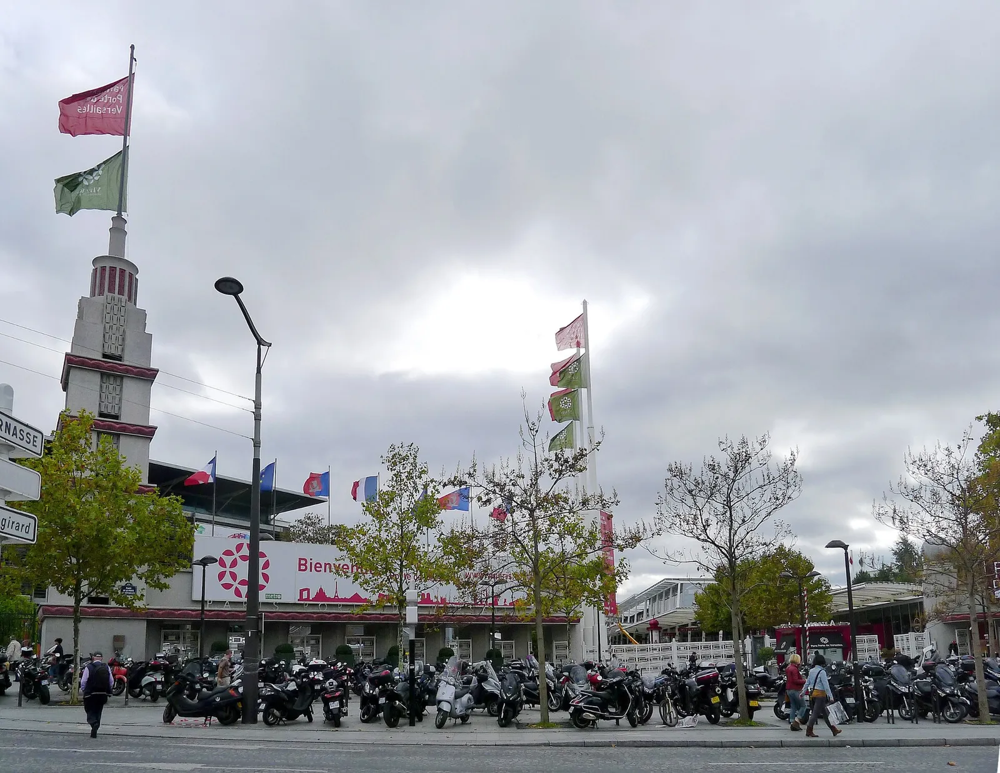
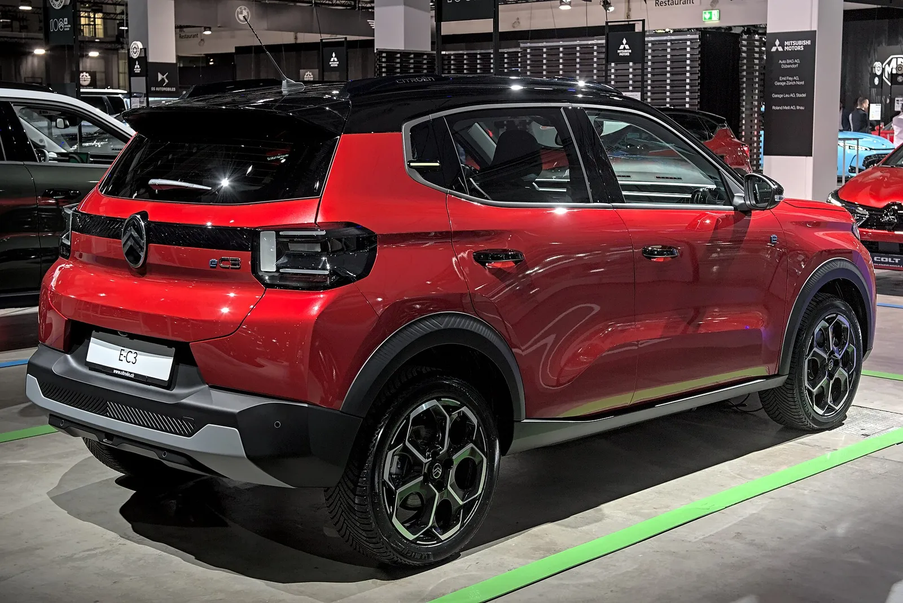
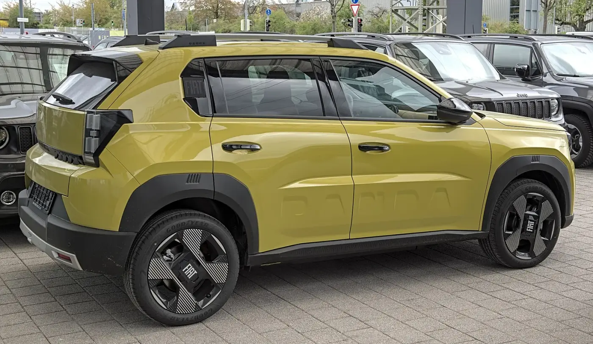
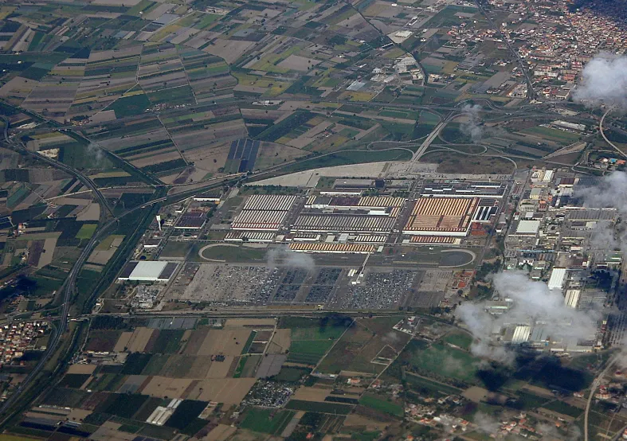
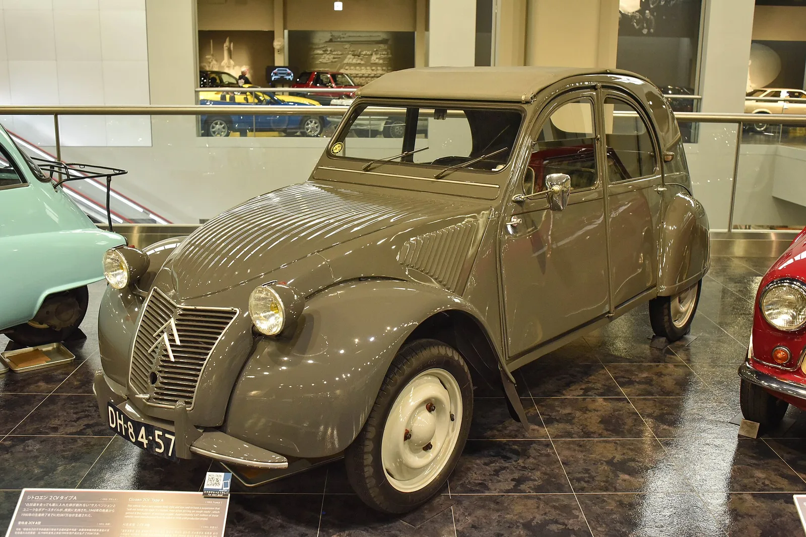
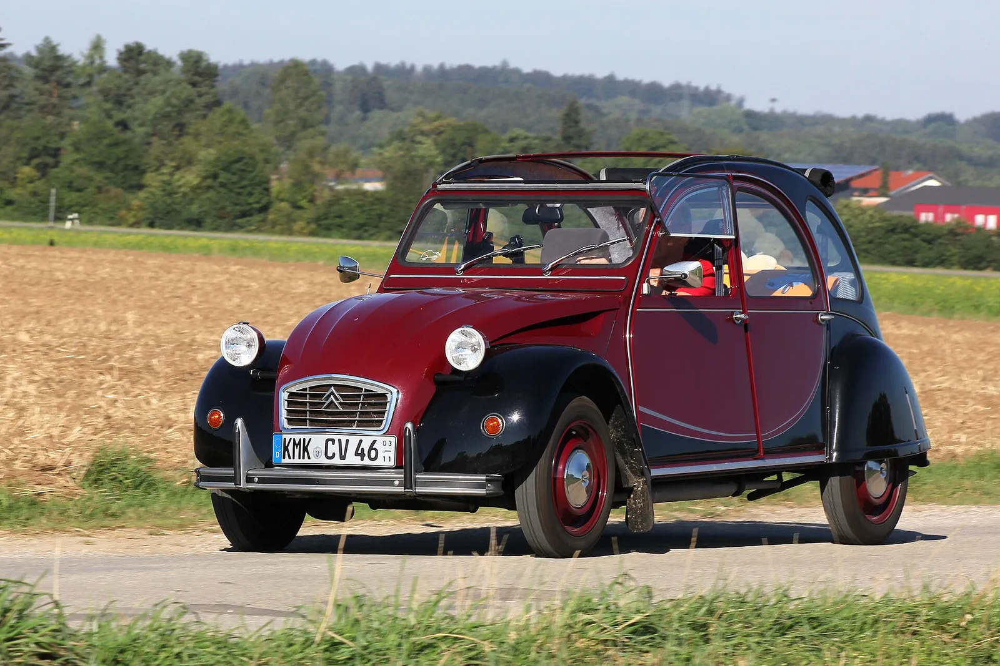
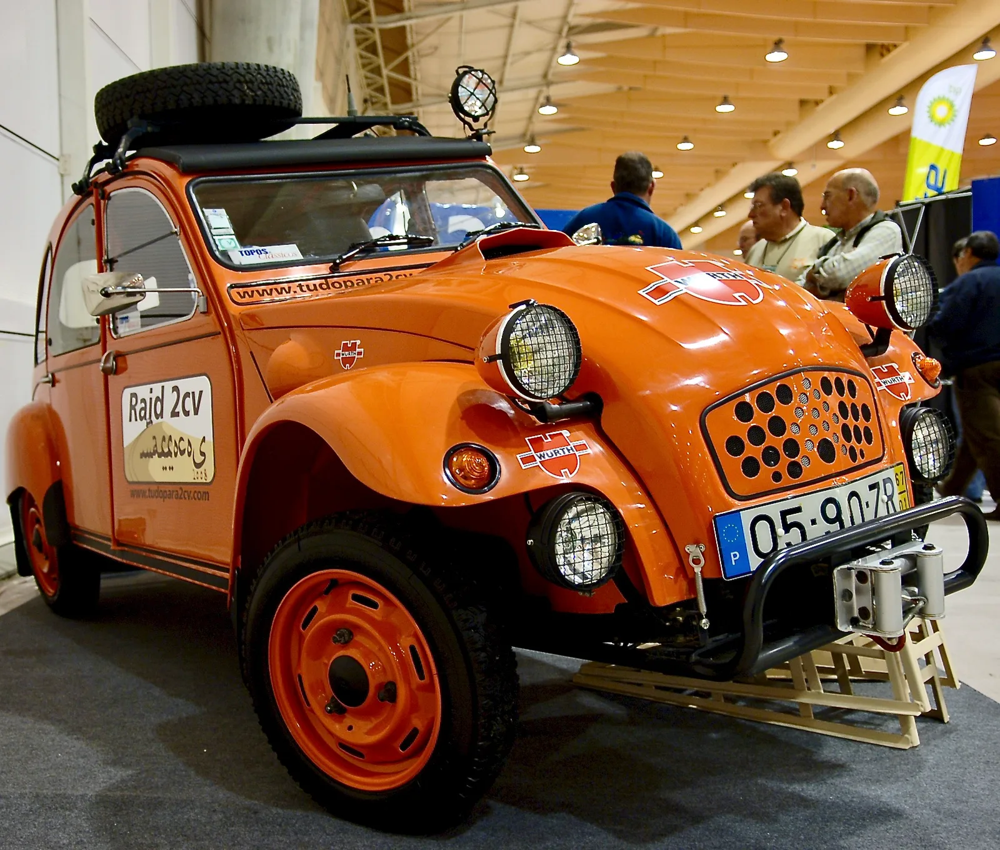
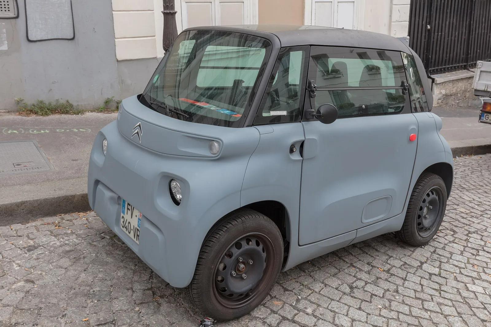
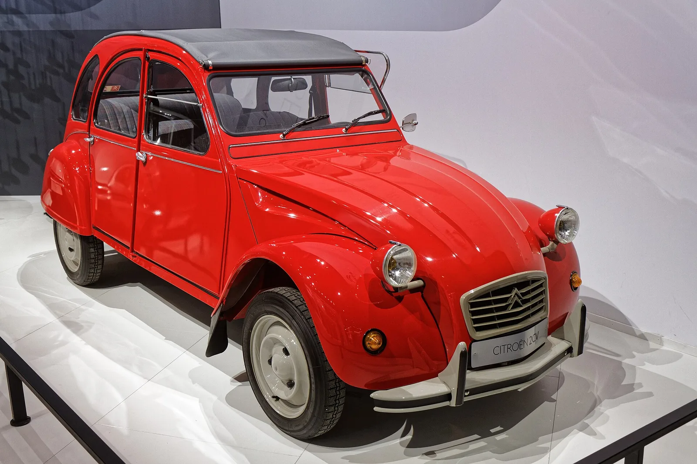
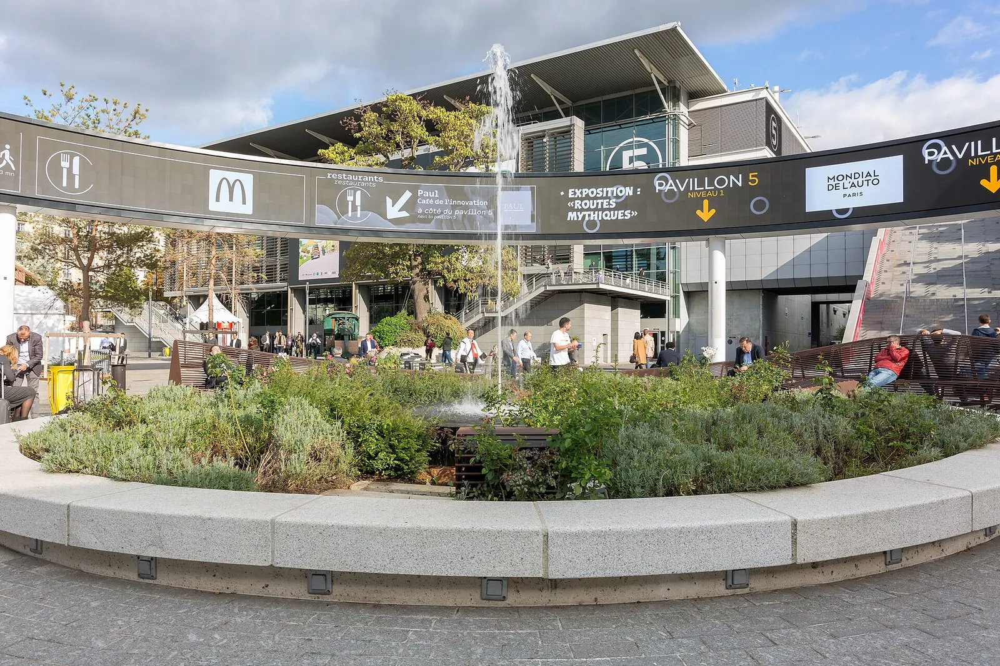

▲ 원조 2CV AZ. 시트로엥은 10월 12일 파리모터쇼에서 이 차를 계승한 전기 콘셉트카를 공개한다 ⓒ Krzysztof Golik (Wikimedia Commons, CC BY-SA 4.0)
"2CV가 돌아온다." 그런데 이번에 공개되는 것은 양산차가 아니라 콘셉트카다. 시트로엥은 9월 30일부터 10월 5일까지 SNS에 콘셉트카의 일부 이미지를 하루씩 풀고 있고, 10월 12일 파리모터쇼에서 전체 모습을 공개한다. 가격 목표는 1만 5,000유로 미만, 생산은 2028년 이탈리아 폼리아노 다르코 공장이라는 것이 현재까지 보도된 내용이다. 이 글은 "어디까지가 공식 발표이고 어디부터가 매체 추정인지"를 나누고, 가격 목표가 경쟁 모델과 비교해 얼마나 낮은지 직접 계산했다.
스텔란티스의 파리모터쇼 전체 전시 계획은 스텔란티스 파리모터쇼 프리뷰 기사에서, 전기차 목표를 낮춘 배경은 스텔란티스 CEO 전략 수정 기사에서 다뤘다. 프리뷰 기사에서는 시트로엥의 서프라이즈 프로젝트를 "2CV 등을 재해석한 결과물일 가능성"이라고 추측 수준으로 썼는데, 이후 시트로엥이 2CV 콘셉트를 직접 예고하면서 추측이 사실로 확인됐다. 이 글은 그 후속이며 가격·플랫폼·경쟁 구도에 초점을 둔다.
1. 정말 공식 발표일까 — 확정된 것과 아닌 것
가장 먼저 확인한 것은 "티저 수준의 소문이냐, 공식 확정이냐"다. 스텔란티스가 미국 증권거래위원회(SEC)에 제출한 5월 21일자 보도자료(6-K 첨부 99.2)는 FaSTLAne 2030 전략 안에서 유럽 사업의 핵심으로 "E-Car, 유럽에서 생산되는 세련되고 저렴한 도심형 전기차의 새 세대"를 명시하고, 첫 생산지로 이탈리아 폼리아노 다르코 공장을 지목했다. 이 문서에는 2CV라는 이름 자체는 나오지 않는다. 2CV 부활은 같은 날 투자자의 날 발표에서 시트로엥 몫으로 언급됐다고 여러 매체가 전했다(검색 결과의 스텔란티스 발표 요약에서도 확인되지만, 스텔란티스 미디어 사이트 원문은 접속 제한으로 직접 열어보지 못했다).
| 항목 | 상태 | 근거·비고 |
|---|---|---|
| 부활·전기차 | 확정 | 시트로엥 9월 30일 발표·티저(매체 인용). 5월 21일 6-K에는 2CV 언급이 없고, 5월 투자자의 날 2CV 언급은 매체 인용(Auto Express는 5월 23일) |
| 공개 방식 | 확정(콘셉트카) | 파리모터쇼 10월 12일 공개. 양산형 디자인은 아님 |
| 가격 | 목표치 | 1만 5,000유로 미만. 보조금 반영 전이라는 보도는 카스쿱스 한 곳(다른 매체는 "미만"만 표기) |
| 생산지·시기 | 보도 확인 | 폼리아노 다르코, 2028년(오토익스프레스·클럽알파·모토르16 등). 스텔란티스 6-K에는 연도 없음 |
| 차체 길이 | 보도 | 4m 미만(오토익스프레스, 제이포스트). 정확한 제원은 미공개 |
| 배터리·주행거리·출력 | 미확인 | 어느 매체도 공식 수치를 제시하지 않음. LFP 배터리는 "거의 확실"이라는 추정 수준 |
| 5도어 여부 | 미확인 | 제이포스트만 언급, 다른 매체에서는 확인하지 못했다 |
| 한국 출시 | 미확인 | 한국 판매 계획은 어디서도 확인하지 못했다 |
2. 티저부터 공개까지 — 10월 5일까지 매일 한 조각씩
시트로엥은 "Time 2 Meet Again"이라는 이름의 티저 캠페인을 9월 30일 시작해 10월 5일까지 SNS에서 콘셉트카 이미지를 매일 공개한다고 밝혔다(ArenaEV·노르디스크빌 인용). 공개된 이미지는 10월 5일 주간에 파리 포르트 드 베르사유 지하철역에 전시된다. 같은 역 이름이 모터쇼장(파리 엑스포 포르트 드 베르사유)과 같다는 점에서, 모터쇼 관람객 동선에 맞춘 홍보로 읽힌다. 이는 카프리즘의 해석이다. 인스타그램 '2CV 사진 올리기(Add yours)' 스티커로 팬이 가진 2CV 사진을 모아 "세계 최대 2CV 사진 컬렉션"을 만든다는 계획도 함께 발표됐다.
| 날짜 | 내용 | 출처·비고 |
|---|---|---|
| 5월 21일 | FaSTLAne 2030 발표(6-K에는 2CV 언급 없음) | 2CV 언급은 매체 인용이며 Auto Express는 5월 23일로 표기해 하루 이틀 차이가 있음 |
| 9월 30일 | 티저 캠페인 시작 | 시트로엥 발표문 인용 보도 |
| 10월 5일 | 티저 종료, 포르트 드 베르사유역 전시 주간 | ArenaEV |
| 10월 12일 | 콘셉트카 월드 프리미어(프레스데이) | ArenaEV·노르디스크빌·모터쇼 공식 사이트(12~18일)·쉬드라디오(12일 프레스 전용) |
| 10월 13~18일 | 일반 관람 | 쉬드라디오(공식 안내 인용), 위키백과 2026 파리모터쇼 항목 |
| 10월 11일(?) | 카스쿱스·일부 검색 요약의 공개일 표기 | 공식 일정(12일 프레스 개막)과 어긋나 오기 가능성이 높음. 스텔란티스 발표문 미열람으로 단정은 하지 않음 |
📍 왜 공개일이 매체마다 다를까
카스쿱스는 공개일을 10월 11일로, ArenaEV와 노르디스크빌은 10월 12일로 적었다. 이번에 모터쇼 공식 사이트(mondial.paris)를 직접 열어 확인한 결과 전시 기간은 10월 12~18일이었고, 프랑스 매체 쉬드라디오는 공식 "Infos pratiques" 페이지를 인용해 12일(월)은 인가받은 언론 전용, 일반 관람은 13~18일이라고 전했다. 모터쇼 개막 전날인 10월 11일(일)에 공개가 열릴 근거는 찾지 못했으므로 카스쿱스의 11일은 오기일 가능성이 높다. 다만 스텔란티스 미디어 발표문(시트로엥 티저 보도자료)은 10월 4일 재시도에서도 403 오류로 열리지 않아, "시트로엥이 몇 시에 어느 행사에서 공개하는가"라는 세부 일정은 공식 문서로 확정하지 못했다. 앞선 프리뷰 기사에서 스텔란티스 전시 일정을 10월 12~18일로 쓴 것과는 일치한다.

▲ 파리 엑스포 포르트 드 베르사유 전시장 입구(2011년 촬영, 현재 모습과 다를 수 있다). 2CV 콘셉트는 이곳에서 공개된다 ⓒ Mbzt (Wikimedia Commons, CC BY 3.0)
3. "1만 5,000유로 미만" — 경쟁 모델과 비교하면
가격 목표의 의미를 가늠하기 위해 앞서 다룬 르노 트윙고 E-Tech와 시트로엥 ë-C3의 가격을 놓고 직접 계산했다. 가격은 "정가"인지 "보조금 반영 후"인지에 따라 비교가 달라진다. 이 글의 비교는 정가 기준으로 맞췄다.
| 모델 | 가격(유로) | 2CV 목표 대비 | 원화 환산 |
|---|---|---|---|
| 시트로엥 2CV(목표) | 15,000 미만 | 기준 | 약 2,205만 원 미만 |
| 르노 트윙고 E-Tech | 19,490부터(프랑스 정가) | 4,490유로 높음(2CV가 약 23.0% 저렴) | 약 2,865만 원 |
| (참고) 트윙고 보조금 반영가 | 13,750(매체 인용) | 2CV 목표가 1,250유로 비쌈 | 약 2,021만 원 |
계산 방식은 이렇다. 트윙고는 프랑스 정가 19,490유로에서 목표 15,000유로를 뺀 4,490유로가 정가의 23.0%(4,490 ÷ 19,490)다. ë-C3는 정가를 확인하지 못해 계산에서 제외했다. 프랑스 매체가 전한 13,990유로는 정가가 아니라 CEE 지원금 등을 반영한 프로모션가라 2CV와의 비율 비교에 쓰지 않았다. 원화 환산은 앞선 트윙고 기사와 같은 2026년 8월 기준 환율 가정이다.
| 2CV 최종 가격 가정 | 트윙고와 차이 | 트윙고 대비 저렴한 비율 | €1=1,400원 | €1=1,470원 | €1=1,550원 |
|---|---|---|---|---|---|
| 13,000유로 | 6,490유로 | 약 33.3% | 약 1,820만 원 | 약 1,911만 원 | 약 2,015만 원 |
| 14,000유로 | 5,490유로 | 약 28.2% | 약 1,960만 원 | 약 2,058만 원 | 약 2,170만 원 |
| 15,000유로(목표 상한) | 4,490유로 | 약 23.0% | 약 2,100만 원 | 약 2,205만 원 | 약 2,325만 원 |
계산 방식은 격차 = 19,490 − 2CV 가격, 비율 = 격차 ÷ 19,490, 원화 = 유로 가격 × 환율이다. 여기서 원화는 어디까지나 환산액이며 한국에서의 판매가가 아니다. 한국 출시 계획은 확인되지 않았고, 수입 시 관세·개별소비세·부가세·운송비·유통 마진이 붙으면 같은 숫자로 팔리지 않는다. 2CV 가격이 1,000유로 변할 때마다 트윙고 대비 격차가 약 5.1%포인트(1,000 ÷ 19,490) 움직인다는 점이 이 표의 핵심이다. 가격 목표가 "미만"이므로 실제 가격은 위 가정 범위의 위쪽 끝(15,000유로)보다 낮을 수도, 보조금 반영 전 기준이라면 지역 보조금이 더해질 수도 있다.

▲ 현행 시트로엥 ë-C3(2024년 아우토 취리히 전시). 2CV는 이 차보다 작은 차체를 목표로 한다고 보도됐다 ⓒ Alexander-93 (Wikimedia Commons, CC BY-SA 4.0)
4. 플랫폼은 무엇일까 — 매체마다 다르게 적은 대목
플랫폼 설명은 이번 소재에서 가장 어긋나는 부분이다. 스텔란티스 6-K는 새 전기차 세대를 "E-Car"라고만 부르며 플랫폼 이름은 적지 않았다. 같은 문서는 유럽 사업의 비용 경쟁력 수단으로 "새 STLA One 플랫폼"도 따로 거론한다.
| 출처 | 표기 | 비고 |
|---|---|---|
| 스텔란티스 6-K(5월 21일) | E-Car, 폼리아노 다르코에서 첫 생산 | 플랫폼 이름·가격 미기재, 1차 자료 |
| 오토익스프레스 | 맞춤형 "E-Car" 구조, STLA One 아님 | LFP 배터리, M1E 규정 언급 |
| 노르디스크빌 | 스텔란티스 공용 "스마트카" 플랫폼, ë-C3를 기준 모델로 언급 | E-Car와 어떻게 다른지 설명 없음 |
| 카스쿱스 | 유럽의 저가 전기차 규정에 맞춘 맞춤 플랫폼, 피아트 신형과 공유 | "보도에 따르면" 수준 |
| 클럽알파 | 저가 E-Car 아키텍처, 차세대 전기 판다와 같은 공장 | 플랫폼 상세 없음 |
정리하면 "스텔란티스가 만드는 저가 전용 구조인 E-Car"라는 점은 일치하지만, 이것이 기존 스마트카 구조의 변형인지 완전히 새 구조인지는 확인하지 못했다. 앞선 프리뷰 기사에서 파리모터쇼 콘셉트카 9종이 모두 STLA One 기반이라고 쓴 것과 이번 2CV의 플랫폼이 같다고 볼 근거는 현재 없다. 이 부분은 구분해 읽어야 한다. 즉 2CV가 9종 콘셉트에 포함되는지, 별도 구성인지도 스텔란티스 공식 설명이 나오면 다시 확인해야 한다.
📍 "M1E"가 무엇인가
오토익스프레스는 이 차가 유럽 내 조립을 요건으로 하는 EU의 저가 소형 전기차 구상(M1E 범주)과 맞물린다고 소개했다. M1E 제도의 세부 요건은 이번 조사에서 1차 자료로 확인하지 못했으므로, "유럽 생산 소형 전기차에 유리한 규정이 만들어지는 중"이라는 정도로만 받아들이는 것이 안전하다.

▲ 피아트 그란데 판다 E(독일 슈투트가르트 촬영). 폼리아노 다르코 공장에서 2CV와 나란히 만들어질 것으로 보도된 것은 판다 신형이며, 이 사진의 차량은 현행 모델이라 2CV의 형제차가 아니다 ⓒ Alexander Migl (Wikimedia Commons, CC BY-SA 4.0)
5. 폼리아노 다르코 — 판다 공장에서 2CV가 나온다
오토익스프레스·모토르16·클럽알파 보도를 종합하면 2CV는 현재 피아트 판다를 만드는 폼리아노 다르코 공장에서 2028년 생산이 시작되고, 차세대 판다와 같은 구조를 쓸 것으로 전해진다. 제이포스트는 이 공장을 "전기 피아트 500을 만드는 곳"으로 적었는데, 다른 매체와 어긋나 오류일 가능성이 높아 따르지 않았다. 스텔란티스 6-K는 E-Car의 첫 생산지가 폼리아노 다르코라고만 확인해 준다.
유럽 생산 거점 측면에서 이 선택은 의미가 크다. 스텔란티스는 같은 문서에서 유럽 생산 능력을 80만 대 이상 줄이고 가동률을 60%에서 2030년 80%로 높인다고 밝혔다. 가동률 20%포인트 상승(80 − 60)을 목표로 하는 상황에서, 판매량이 큰 소형 저가 전기차는 공장을 채울 후보 중 하나다. 이는 카프리즘의 해석이며 스텔란티스가 2CV를 그 수단으로 명시한 것은 아니다.

▲ 폼리아노 다르코 공장 지대 항공 사진(2010년 촬영, 위키미디어 설명은 "과거 알파로메오 공장"). 현재 시설 배치와 다를 수 있다 ⓒ Ra Boe (Wikimedia Commons, CC BY-SA 3.0 de)
6. 원조 2CV와 비교 — 78년 만의 귀환
원조 2CV는 1948년 10월 7일 파리 오토살롱에서 공개됐다(위키백과 기준). 이번 공개가 10월 12일이라면 정확히 78년이 지난 같은 도시의 같은 계절이다. 말이 끄는 수레에 의존하던 프랑스 농민을 위한 "바퀴 달린 우산"을 목표로 만들었다는 점이 새 2CV가 가져오려는 정신이다. 시트로엥 CEO 자비에르 샤르동은 오토익스프레스 인용으로 "아이콘은 감성을 만든다"고 했고, 노르디스크빌은 그가 "전기적이고 단순하고 저렴하며 인간적인 차"라고 요약했다고 전했다. 발언 원문은 직접 확인하지 못하고 매체 인용에 의존한다.

▲ 초기형으로 소개된 1955년식 2CV 타입 A 세단(위키미디어 파일명 기준, 사진만으로 연식은 확정하지 않음). 새 2CV가 기대는 원조의 단순한 형태다 ⓒ Coolalabright (Wikimedia Commons, CC BY 4.0)
| 항목 | 원조 2CV | 새 2CV(콘셉트·목표) |
|---|---|---|
| 공개 | 1948년 10월 7일 파리 | 2026년 10월 12일 파리(예정) |
| 동력 | 375cc 공랭 2기통 약 9마력(6.6kW) | 순수 전기, 사양 미공개 |
| 길이 | 약 3,860mm | 4m 미만(보도) |
| 생산 | 1948~1990년, 2CV 세단 약 380만 대, 파생 모델 포함 약 900만 대 이상(위키백과) | 2028년 폼리아노 다르코(보도) |
| 성격 | 농촌 모터리제이션 | 저가 도심형 전기차, 가격 1만 5,000유로 미만 목표 |
생산 대수는 매체마다 다르다. 위키백과 기준으로 2CV 세단이 380만 대 이상, A시리즈 파생 모델을 합치면 약 900만 대 이상이다. 노르디스크빌은 "파생 모델 포함 800만 대 이상"이라고 적어 집계 범위가 다르다. 새 차의 길이 4m 미만은 원조(3.86m)와 비슷한 크기라는 뜻이어서 "현재 유럽 소형 전기차 크기로 돌아간다"는 의미로 읽을 수 있지만, 정확한 길이는 10월 12일을 지켜봐야 한다.

▲ 2CV 샤를스톤(1980~1990년 생산 한정 사양, 독일 바트 뵈리스호펜 인근 촬영). 2CV는 40년 넘게 생산됐다 ⓒ Lothar Spurzem (Wikimedia Commons, CC BY-SA 2.0 de)
7. 2CV가 맞붙을 시장 — 소형 전기차 경쟁
오토익스프레스는 2CV를 르노 트윙고(길이 약 3.8m)와 기아 EV1과 같은 급으로 분류했고, 클럽알파는 르노 5보다 비싼 차가 아니라 트윙고 EV와 직접 경쟁한다고 썼다. 트윙고는 80마력 전기모터로 163마일(약 262km)을 달리는 모델이며(앞선 트윙고 기사), 오토익스프레스는 2CV가 비슷한 사양(27.5kWh, 80마력 안팎)일 것으로 짐작했다. 이 수치는 매체의 추정이며 시트로엥이 밝힌 것이 아니다.

▲ 랠리 레이드용으로 개조된 2CV(1967년식으로 소개, 포르투갈 전시). 2CV의 "싸고 단순해서 고쳐 쓰기 쉽다"는 이미지가 어떻게 문화가 됐는지 보여주는 사례다 ⓒ Pedro Ribeiro Simões (Wikimedia Commons, CC BY 2.0)
| 모델 | 출시·판매 | 확인된 정보 | 비고 |
|---|---|---|---|
| 시트로엥 2CV | 2028년 생산 목표 | 1만 5,000유로 미만 목표, 4m 미만 | 배터리·주행거리 미공개 |
| 르노 트윙고 E-Tech | 2026년 하반기 판매 | 정가 19,490유로(프랑스), 80마력·약 262km | 앞선 트윙고 기사 기준 |
| 시트로엥 ë-C3 | 판매 중 | 13,990유로(2026년 1월 31일까지 소득 조건부 프로모션가) | 도심형 113마력 You 트림 |
| 기아 EV1(2028년 출시 보도, Auto Express) | 보도 확인 | Auto Express가 "2028년 출시 경쟁 모델"로 언급 | 사양은 직접 확인하지 못했다 |

▲ 현행 시트로엥 아미(파리 촬영, 2022년). 시트로엥은 2CV 이전에도 초소형 전기차로 저가 전동화를 시도해 왔다 ⓒ Diego Delso (Wikimedia Commons, CC BY-SA 4.0)
카프리즘 해석으로, 2CV의 승부처는 디자인이 아니라 보조금 없이도 1만 5,000유로 안팎에 팔 수 있느냐다. 중국 브랜드의 저가 전기차 공세에 맞서 유럽 업체가 잇따라 소형 전기차를 내놓는 흐름은 앞선 르노 트윙고 영국 전시 기사에서도 짚었다. 스텔란티스가 전기차 목표를 낮추면서도 저가 소형 전기차는 유럽 전략의 핵심으로 남긴 점은 전략 수정 기사와 함께 보면 연결된다.
8. 10월 12일에 확인할 것 — 체크리스트
| 항목 | 지금 상태 | 확인 포인트 |
|---|---|---|
| 차체 길이·도어 수 | 4m 미만, 5도어 여부 불명 | 정확한 제원과 3도어/5도어 |
| 배터리·주행거리 | 미공개 | LFP 여부, 용량(kWh), WLTP 주행거리 |
| 플랫폼 명칭 | 매체마다 상이 | E-Car가 STLA One과 어떤 관계인지 |
| 가격 문구 | "1만 5,000유로 미만" | 보조금 반영 전/후 구분 |
| 양산 일정 | 2028년(보도) | 유럽 외 시장 판매 여부, 한국 포함 여부 |
| 두 번째 콘셉트 | 노르디스크빌 "비밀 콘셉트 1종 추가" | 정체 확인(모델 미확인) |

▲ 파리 모터쇼에 전시된 빨간색 2CV(2014년 모터쇼, 위키미디어 파일명 기준). 시트로엥은 파리모터쇼에 2CV를 전시해 온 전례가 있다 ⓒ Thesupermat (Wikimedia Commons, CC BY-SA 3.0)
노르디스크빌은 시트로엥이 같은 모터쇼에서 "비밀 콘셉트"를 하나 더 공개한다고 전했지만 구체적인 내용은 확인하지 못했다. 모터쇼 후에는 이 글의 표를 기준으로 달라진 항목만 갱신하면 된다.

▲ 파리 엑스포 포르트 드 베르사유 중앙 광장. 2CV 콘셉트는 이 전시장에서 공개된다(위키미디어 파일 제목은 2018년 모터쇼 촬영으로 표기) ⓒ Matti Blume (Wikimedia Commons, CC BY-SA 4.0)
9. 자주 묻는 질문 — 한국 독자가 궁금해할 것
❓ 한국에서도 살 수 있나
시트로엥이나 스텔란티스가 한국 판매를 밝혔다는 보도는 확인하지 못했다. 가격 목표 1만 5,000유로 미만이라는 숫자는 유럽 기준이며, 한국에서의 가격과는 무관하다. 한국에서 소형 전기차를 살 때 보조금이 실구매가를 얼마나 바꾸는지는 기아 EV3 실구매가·보조금 기사와 지자체별 전기차 보조금 비교 기사에서 계산 방식을 볼 수 있다.
❓ 10월 12일에 나오는 차를 그대로 살 수 있나
아니다. 시트로엥이 예고한 것은 콘셉트카이며, 양산형은 2028년 생산 목표로 보도됐다. 콘셉트카의 헤드램프·휠 아치·루프라인이 양산 모델에 얼마나 남을지는 공개 후에도 별도로 확인해야 한다. 앞선 파리모터쇼 프리뷰 기사에서도 콘셉트와 양산의 거리를 구분해서 읽을 것을 권했다.
❓ 이름이 "2CV"인 이유는
원조 2CV의 "CV"는 프랑스의 과세 마력 단위(cheval vapeur)를 뜻하는 것으로 알려져 있다. 새 모델의 정식 차명이 2CV로 확정됐는지는 확인하지 못했고, 시트로엥이 "2CV 콘셉트"라고 부르는 단계다. 양산 때 다른 이름을 쓸 가능성도 배제할 수 없다.
10. 요약
시트로엥 2CV 부활은 소문이 아니라 공식 확정이지만, 10월 12일 파리에서 나오는 것은 콘셉트카다. 티저는 9월 30일~10월 5일 SNS에서 이어지고 있고, 양산은 2028년 폼리아노 다르코로 보도됐다.
가격 목표 1만 5,000유로 미만은 트윙고 정가(19,490유로)보다 약 23% 낮다. 다만 보조금 반영 전 가격이라는 보도가 맞다면 기간·조건부 프로모션 광고가(13,750~13,990유로)와는 비교 기준이 달라진다.
플랫폼 명칭, 배터리·주행거리, 5도어 여부, 한국 출시는 모두 확인하지 못했다. 공개일도 카스쿱스(10월 11일)와 다른 매체(10월 12일)가 엇갈려, 모터쇼 공식 사이트(12~18일)와 쉬드라디오(12일 프레스 전용)에 따르면 12일이 맞을 가능성이 높으나, 시트로엥 발표문은 열람하지 못해 단정하지는 않았다.